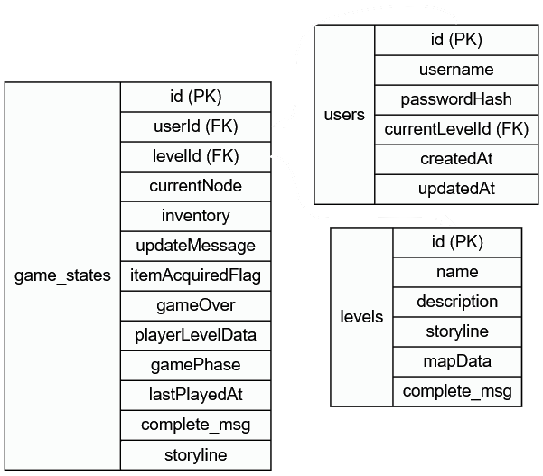

Enhancement Snapshots
The sections below provide a detailed look into each enhancement made to the project, covering the thought process, technical decisions, and outcomes!
⚙️ Software Design and Engineering
Important Links:
Starting Python Code: GitHub Repo
Enhancement One: GitHub Branch
From Monolithic CLI to Distributed Architecture
This week we were tasked with implementing an enhancement an artifact that showed adequate software design and engineering. So, I decided to take this time to refactor my original python game and remove all the globals, that way I had a solid starting point. Without going into too much detail (because it bleeds into the other enhancements), I knew I wanted to have an authoritative server and a "dumb" client for lack of a better term.

Justification for Inclusion and Improvements
Since the original game relied on a terminal for user input, I figured why not implement a faux terminal as the client, and all the input goes to the server for decision-making. With that, I just needed to turn our old game into the server! Also, I hate Python, so why not try TypeScript? Node just released native support for TypeScript - sounds like fun! P.S. It was experimental as of this capstone
If this enhancement works as expected, it would really get the wheels turning and make the future enhancements that much easier! So, what's all going into this enhancement, and how does it align with software design and engineer, and how does this showcase my skills?
- I refactored the game from a single CLI game to a client-server architecture in a new language. We intended for our faux terminal clients to be dumb, and they did in fact turn out dumb! The server became the invisible engine driving the game.
-
During this refactor, a major focus was improving how user input is processed and how game state is managed. The command handling was moved to the server, and global variables were eliminated in favor of explicit
GameStateobjects that are passed and updated per player session. This makes it possible to ensure each player’s game is isolated and consistently managed, preventing unexpected side effects common in the original design. -
The
handleCommandfunction effectively became our API for our websocket connections and acted as a central dispatcher, managing game phases and dispatching commands cleanly!
I got rid of our messy global state and moved to a stateful OOP approach that is mapped to each connection. That combined with the client server split directly showcases my ability to design and implement solutions that follow best practices for architectural separation and state management. Our project is now more modular and easier to maintain. It not only sets the stage for the next two enhancements, but it also makes them tremendously easier! If that doesn't nail the course outcome for software design and engineering, I don't know what else would! This is a wonderful demonstration on how to transform a functional but unscalable project into something that has a well-engineered backend that's ready for future expansion! It's not just about getting the code to work; it's about getting it to work well, in a way that's clean, organized, and makes sense to anyone (including future me) who has to look at it.
And thus, the 'TextBound Castle Crawler' was born, a name as literal as the text it's bound by.
Reflection on the Enhancement Process
The most valuable thing I learned getting this up and running was how much more robust and predictable game state becomes when managed explicitly on the server, rather than relying on implicit global state. The challenges primarily involved carefully disentangling the intertwined logic from the original single script and ensuring that all user inputs were correctly routed and processed within the new server-side context.
🔨 Algorithms and Data Structures
Important Links:
Enhancement Two: GitHub Branch
From Simple Logic to Algorithmic Mastery
Building upon the foundational client-server architecture, TextBound Castle Crawl continued its evolution. The game still looks the same, but the code has evolved quite a bit! This enhancement phase was primarily focused on upgrading the underlying algorithmic principles and data structures that drive the game’s core mechanics. My initial plan to focus on spatial representation and efficient data handling quickly adjusted due to troubleshooting challenges. These "inconveniences" led to a significant refactoring that introduced several new, dedicated modules like types.ts, error.ts, direction.ts, and pathfinding.ts, establishing a cleaner, more organized, and type-safe codebase for robust development. This unplanned journey turned out to be one of the most beneficial parts of the project!
Justification and Showcase of Skills
The original game and its initial client-server refactor relied on simpler data models and implicit error handling that limited complex interactions and optimal performance. For this enhancement, my primary focus was improving the underlying data structures, code structure, and algorithms that worked with said data. With those focal points, a natural by-product was the data we're hanging onto in game state. This was primarily due to me trying to prepare for the next persistence update. I started by breaking down the game logic on the server into dedicated TypeScript modules. Here is where I really started to notice how much easier it was to jump in and out of files, and increment changes easily. While there is more that I haven't covered, these changes lay a strong foundation for more changes and show my ability to design and evaluate algorithms to solve problems.
I implemented robust error handling with Result
Next, I refactored the game’s levels into a formal graph representation. Each room became a "node" and the paths between them became "edges." This simple change made structuring and walking through the level information far easier and directly set the stage for one of the most fun parts of this enhancement: A* pathfinding. In order to get A* to work, I needed a heuristic function, which required a coordinate system. Instead of manually adding coordinates to every node, I developed an algorithm to infer coordinates for each node based on its connections. This innovative solution automates a complex setup task, ensuring a consistent spatial arrangement of game elements. With the graph and coordinates in place, I implemented the A* pathfinding algorithm itself in its own pathfinding.ts module. The algorithm calculates the shortest, most optimal path between two points in the level, and while it's currently used to provide the player with directions, it’s easily adaptable for a future mini-map feature or even NPC movement. This was one of the most rewarding parts of the project, as it directly demonstrates my ability to apply and optimize complex algorithms to solve a real-world navigational problem.
Finally, I made some smaller but equally impactful changes. I refactored the player's inventory to use a hash table, which allows for near-constant-time operations for adding, removing, and checking for items. This made inventory management more structured and easier to work with. I also enhanced the move command to handle synonyms like "move N," "move north," and "move u." While this was initially a quality-of-life change for my own debugging, it significantly enhances the user experience, demonstrating attention to user-facing robustness and thoughtful input parsing.
w The sum of these changes—from adopting a graph structure and A* pathfinding to implementing a Result pattern—shows my ability to use well-founded and innovative techniques, skills, and tools to build a more resilient and maintainable system. It also shows a commitment to collaborative environments by creating a modular and well-documented codebase.
Reflection on the Enhancement Process
The process of enhancing TextBound Castle Crawl with these algorithmic and data structural improvements was incredibly insightful. Perhaps the most beneficial thing I learned was the practical power of choosing the right data structure for a specific problem. Seeing how the transition to a formal graph immediately unlocked the capability for a powerful algorithm like A* was an "aha!" moment, reinforcing the notion that algorithms and data structures are inextricably linked. I also gained a much deeper appreciation for explicit error handling with the Result pattern. While it was initially verbose, it forces a more disciplined and predictable approach to managing function outcomes, leading to far more robust code. The challenges were demanding, from debugging the A* algorithm to correctly implementing a heuristic function. I learned that disciplined debugging and a firm understanding of how the components interact are essential. The small but impactful change of adding move command synonyms was a lesson in itself, highlighting how seemingly minor quality-of-life improvements can save significant development time and improve the final user experience.
💾 Databases
Important Links:
Enhancement Three: GitHub Branch
From Temporary Sessions to Persistent Worlds
Building upon the foundational client-server architecture and enhanced algorithms, the project continues to evolve in a significant way! I was focused on transitioning the player experience from a single, ephemeral experience to a potentially constantly evolving experience. Thankfully, most of my data was already centered around being persistent, so my biggest issue was ensuring all the right information could be saved, and instantiated. The initial scope was simply to add a database for persistence, but it morphed into creating an entire authentication flow for user accounts and a comprehensive method of tracking and storing player progress! I really love how this project continually keeps me learning.
Justification and Showcase of Skills
The original game, and even the subsequent enhancements, were still a temporary, single-user experience. My goal was to create a durable backend that stores all relevant game data. I normally hate working with relational databases, but this brings up probably my favorite part of the capstone: Drizzle. Drizzle is an ORM that literally made solving data persistence a breeze. This showcases my ability to use modern tooling, while still following industry-standards to deliver a valuable solution! The schema actually wasn't that easy to lay out, because my game state and levels already incorporated everything that needed to be persisted! The more difficult parts were integrating user registration, authentication, and have those work with game state. Just wanted to say that this shows my proactive security mindset, which is a key course outcome I was focused on.
To achieve this, I first designed a relational database schema for the game using PostgreSQL. The schema includes tables for users and their respective game states, with a clear one-to-one relationship between them. This structured approach ensures data integrity and provides a scalable foundation for future features like leaderboards or multi-user interaction. The user table stores all player accounts with unique IDs and hashed passwords, while the game state table contains the current state of a player's session.
Next, I integrated an Object-Relational Mapper (ORM), which they say abstracts direct database queries, but in my opinion it just simplifies a query by parameterizing it, which also type checks it in our case! Instead of doing a string query and getting some data that I have to parse, I now get database records as TypeScript objects. That increased my productivity significantly - and also prevents SQL injection! I chose the ORM based on its simplicity and robust feature set that directly complemented my project, managing the trade-off of ease of use over raw SQL performance optimization.
Finally, the addition of a secure authentication system was a crucial part of this milestone. I built a dedicated auth_commands.ts module to handle all authentication logic, from user registration to login. User passwords are now salted and hashed using industry-standard cryptography, ensuring they are stored securely and never in plain text. I also implemented a data migration strategy and created seed files to populate the database with initial game data. I now understand both are important best practices for managing a database's evolution, but I just did it to make things easy to test and repeatable!
Reflection on the Enhancement Process
The database enhancement process was a testament to the importance of structured data design. It was incredibly rewarding to finally be able to save player progress and log back into the game right where I left off. The initial challenge was designing a logical schema that could store complex game state efficiently, but when I realized I could just reuse my game state and level objects, it wasn't that bad. Though, it did require adjusting the `GameState` a bit to properly reflect the custom level data being stored in the database. The biggest trouble I had was transitioning it from game over to level over, and is there another level? This was an eye-opener that reinforces the importance of careful planning before implementation, as changes to the database schema can be difficult to manage later on. It also highlighted the power of an ORM in simplifying database interactions, a trade-off I was happy to make for increased development speed and type safety.